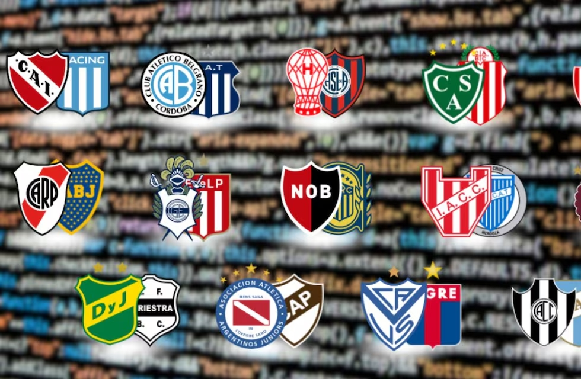
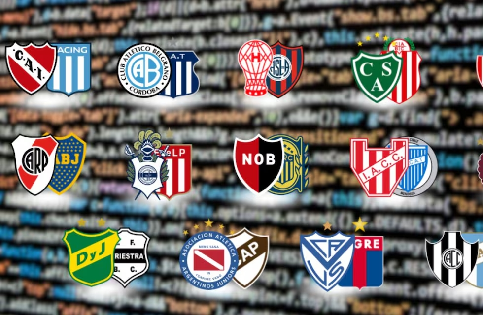

Galería fotográfica: Clásicos inolvidables
Imágenes exclusivas de los superclásicos, clásicos rosarinos y platenses. Celebraciones, hinchadas, goles y momentos únicos en alta resolución.
Revive los momentos más emocionantes del fútbol argentino a través de imágenes, videos y sonidos que marcaron la historia reciente y pasada de nuestro deporte. Esta sección está dedicada a los fanáticos que quieren revivir goles inolvidables, escuchar las voces más influyentes del fútbol y descargar contenido exclusivo para coleccionar o compartir.
Imágenes exclusivas de los superclásicos, clásicos rosarinos y platenses. Celebraciones, hinchadas, goles y momentos únicos en alta resolución.
Compactos de partidos, goles espectaculares, errores curiosos y entrevistas a los protagonistas. Cada semana, una selección curada para vos.
Escuchá nuestro podcast semanal con análisis, debates, entrevistas a periodistas y jugadores. Disponible en Spotify, YouTube y Apple Podcasts.
Posters de ídolos del fútbol argentino para imprimir o usar como fondo de pantalla. Diseños exclusivos y coleccionables cada mes.
Explorar posters descargables